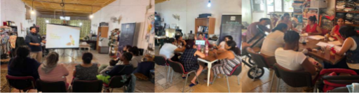
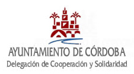

Proyecto financiado por el Plan Municipal de Paz y Solidaridad del Ayuntamiento de Córdoba, dentro de la línea estratégica de Cooperación Internacional para el Desarrollo.
El Proyecto RESCATE Córdoba, una iniciativa de intervención social especializada dirigida a mujeres en situación de alta vulnerabilidad, se ejecutó durante el período comprendido entre enero y diciembre de 2021 en la ciudad de Córdoba y su provincia.
El proyecto nació con el objetivo de ofrecer una respuesta integral a una realidad social especialmente compleja, proporcionando protección, atención especializada, acompañamiento y recursos destinados a favorecer la recuperación, autonomía e inclusión social de las mujeres participantes. La intervención se desarrolló desde una perspectiva de derechos humanos y de género, promoviendo itinerarios personalizados adaptados a las necesidades de cada mujer.
Durante la ejecución del programa se llevaron a cabo actuaciones de detección y acercamiento mediante unidades móviles en clubes, pisos y otros entornos vulnerables, así como servicios de atención telefónica permanente, rescates y traslados a recursos seguros para mujeres que se encontraban en situaciones de riesgo o explotación. Además, se ofreció asesoramiento social, atención psicológica, acompañamiento sanitario, orientación laboral y apoyo en la realización de trámites administrativos.
El proyecto contó igualmente con recursos de acogimiento residencial que incluyeron plazas de emergencia, larga estancia y autonomía, permitiendo ofrecer alojamiento temporal y protección a mujeres solas y acompañadas de sus hijos e hijas menores. Paralelamente, se desarrollaron acciones de cobertura de necesidades básicas, suministro de alimentos y productos de higiene, mediación intercultural, talleres formativos y actividades orientadas al fortalecimiento personal y social de las participantes. Entre las actividades desarrolladas destacaron los talleres de empoderamiento, habilidades sociales, prevención de la violencia de género, orientación laboral, arteterapia, musicoterapia, danza terapéutica y actividades culturales, de ocio y tiempo libre, destinadas a favorecer los procesos de recuperación emocional y construcción de proyectos de vida autónomos.
Asimismo, el programa incorporó acciones de sensibilización dirigidas a la ciudadanía cordobesa para visibilizar la realidad de la trata y la explotación sexual como una forma de violencia contra las mujeres. Entre ellas destacaron la iniciativa “Caminando por Libertad”, campañas informativas, jornadas de sensibilización y actividades formativas dirigidas especialmente a población joven en institutos y universidades. Estas actuaciones contribuyeron a aumentar la concienciación social sobre una problemática que frecuentemente permanece oculta.
El Proyecto RESCATE Córdoba ha sido posible gracias a la colaboración entre APERFOSA y el Ayuntamiento de Córdoba, permitiendo reforzar la red de recursos especializados destinados a la detección, protección y recuperación de mujeres víctimas de trata y explotación sexual. La entidad reafirma así su compromiso con la defensa de los derechos humanos, la igualdad y la lucha contra todas las formas de violencia contra las mujeres.
Este proyecto y todas sus actuaciones han sido subvencionadas por el Ayuntamiento de Córdoba a través del Departamento de Cooperación, para dar asistencia a mujeres en situación de alta vulnerabilidad con un enfoque directo en víctimas de trata.
Anualidad 2021

